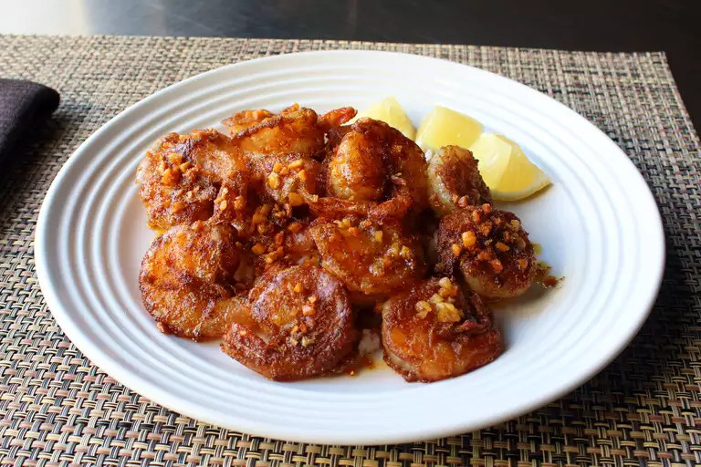

Home
Hawaiian Garlic Shrimp Scampi

Description
Hawaiian Garlic Shrimp Scampi can be enjoyed as an appetizer/light meal OR for dinner with your favourite pasta of choice! You can also keep it low carb and serve over zucchini noodles or with steamed cauliflower!
Ingredients
- 1 head garlic
- 4 tablespoons unsalted butter
- 1 pound frozen large deveined, shell-on shrimp, thawed
- 2 tablespoons rice flour
- 1 tablespoon paprika
- 1 ½ teaspoons kosher salt
- 1 teaspoon cayenne pepper
- 2 tablespoons olive oil
Steps
-
Separate garlic cloves into a bowl; place another bowl on top. Shake until all peels separate from cloves, about 30 seconds, being careful not to shake too hard. Mince garlic cloves.
-
Melt butter in a sauté pan over medium heat; add minced garlic. Cook, stirring occasionally, until golden brown, 2 to 3 minutes; transfer to a small bowl and set aside.
-
Pat thawed shrimp dry with paper towels; add to a large mixing bowl.
-
Combine rice flour, paprika, salt, and cayenne pepper in a small bowl; sprinkle over shrimp and toss until completely coated using a large spoon or spatula.
-
Heat olive oil in a nonstick skillet over medium-high heat. Add shrimp in a single layer, in batches, and cook until browned and just barely cooked through, 2 to 3 minutes per side. Add some garlic butter; cook for 30 seconds more. Repeat with remaining shrimp and garlic butter. Serve immediately.
Notes
This recipe can be made with shell-off shrimp for easier eating, but using shrimp with the shells on is the classic method. I think the best size shrimp to use are 21 to 25 per pound.
All-purpose flour can be substituted for rice flour if preferred.
Home